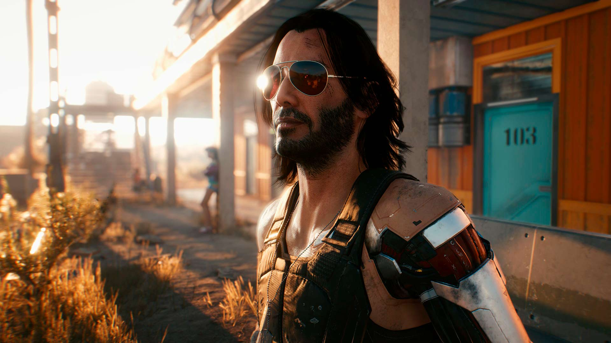
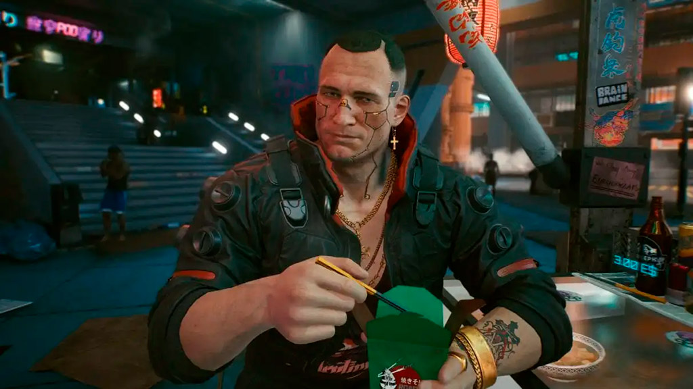
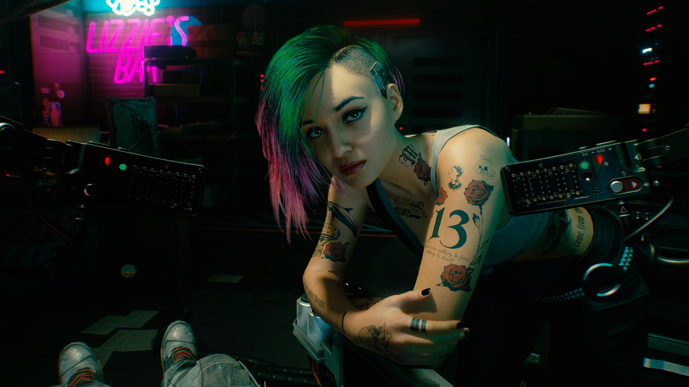

Cyberpunk 2077
Lo compré en oferta en el Zmart —mi tienda favorita de las de mall— y creo que es piola.
El gameplay es okay. Me hice una build de sigilo y al final era op. Mataba casi todo de una con Cortocircuito (en Very Hard). Aunque mis habilidades favoritas son Sonic Shock y Whistle, para no matar a nadie como en el Dishonored.
El problema es que Night City vale p***. O sea, por un lado es la ciudad más impactante que he visto en un juego, pero no se puede hacer casi nada. A lo más, matar enemigos random.
El brillo del Cyberpunk está en la historia.
Me gustó caleta el personaje de Keanu Reeves y Jackie. Jackie lo más grande. Judy igual. Una lata que no se pueda interactuar —tanto— con ellos fuera de la trama principal, porque ellos hacen el juego.
Spoiler
El final donde te matas con Keanu es ufff y el mensaje que te deja Judy en la escena post créditos es fatal.Mi único problema con la historia, es que a veces se me hacía difícil entrar en el personaje y hacer otras cosas que no avanzaran la trama principal, porque sentía que siempre había algo más importante que hacer.
Pero weno, Cyberpunk 2077 es piola. Aquí dejo algunos links y capturas de mis personajes favoritos.
→ Steam / GOG / PlayStation Store / Microsoft Store


